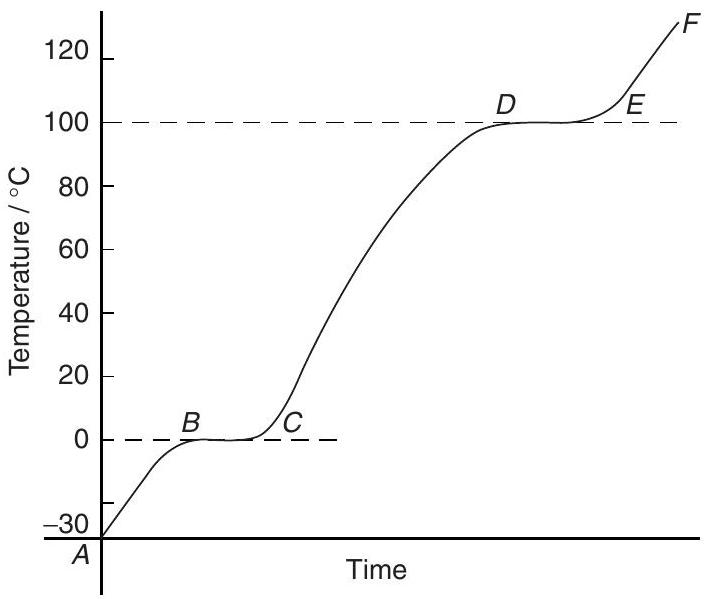
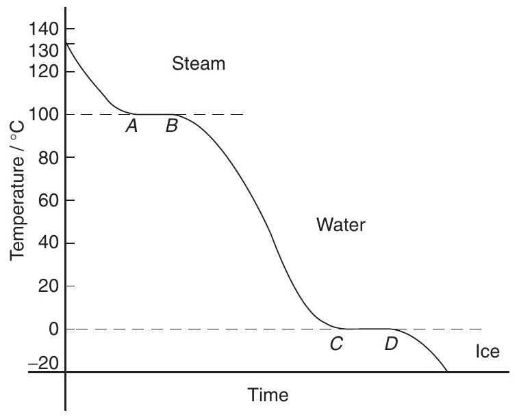
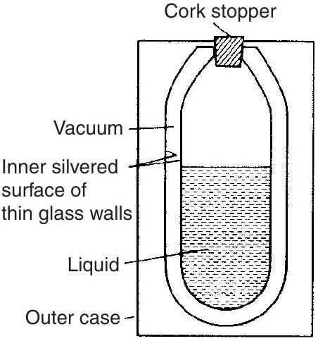

Mechanical science - Heat energy and transfer
Heat energy and transfer
At the end of this chapter you should be able to:
- distinguish between heat and temperature
- appreciate that temperature is measured on the Celsius or the thermodynamic scale
- convert temperatures from Celsius into Kelvin and vice versa
- recognise several temperature measuring devices
- define specific heat capacity, $c$ and recognise typical values
- calculate the quantity of heat energy $Q$ using $Q=mc(t_{2}-t_{1})$
- understand change of state from solid to liquid to gas, and vice versa
- distinguish between sensible and latent heat
- define specific latent heat of fusion
- define specific latent heat of vaporisation
- recognise typical values of latent heats of fusion and vaporisation
- calculate quantity of heat $Q$ using $Q=mL$
- describe the principle of operation of a simple refrigerator
- understand conduction, convection and radiation
- understand the construction of a vacuum flask
- appreciate the use of insulation in conserving fuel in the home
19.1 Introduction
Heat is a form of energy and is measured in joules. Temperature is the degree of hotness or coldness of a substance. Heat and temperature are thus not the same thing. For example, twice the heat energy is needed to boil a full container of water than half a container - that is, different amounts of heat energy are needed to cause an equal rise in the temperature of different amounts of the same substance.
Temperature is measured either (i) on the Celsius ( ${ }^{\circ}\mathbf{C}$ ) scale (formerly Centigrade), where the temperature at which ice melts, i.e. the freezing point of water, is taken as $0^{\circ}\mathrm{C}$ and the point at which water boils under normal atmospheric pressure is taken as $100^{\circ}\mathrm{C}$, or (ii) on the thermodynamic scale, in which the unit of temperature is the kelvin (K). The kelvin scale uses the same temperature interval as the Celsius scale but as its zero takes the 'absolute zero of temperature' which is at about $-273^{\circ}\mathrm{C}$. Hence,
i.e.
(as stated in Chapter 19).
Thus, for example, $0^{\circ}\mathrm{C}=273\mathrm{~K}, 25^{\circ}\mathrm{C}=298\mathrm{~K}$ and $100^{\circ}\mathrm{C}=373\mathrm{~K}$
Problem 1. Convert the following temperatures into the kelvin scale: (a) $37^{\circ}\mathrm{C}$ (b) $-28^{\circ}\mathrm{C}$
From above, $$ \text {kelvin temperature}=\text {degree Celsius}+273 $$
(a) $37^{\circ}\mathrm{C}$ corresponds to a kelvin temperature of $37+273$, i.e. $\mathbf{310}\mathbf{~ K}$
(b) $-28^{\circ}\mathrm{C}$ corresponds to a kelvin temperature of $-28+273$, i.e. $\mathbf{245}\mathbf{~ K}$
Problem 2. Convert the following temperatures into the Celsius scale: (a) 365 K (b) 213 K
From above, $K=\left({ }^{\circ}\mathrm{C}\right)+273$ Hence, degree Celsius $=$ kelvin temperature -273
(a) 365 K corresponds to $365-273$, i.e. $\mathbf{92}{ }^{\circ}\mathbf{C}$
(b) 213 K corresponds to $213-273$, i.e. $\mathbf{-60}{ }^{\circ}\mathbf{C}$
Now try the following exercise
Exercise 96 Further problems on temperature scales
- Convert the following temperatures into the Kelvin scale: (a) $51{ }^{\circ}\mathrm{C}$ (b) $-78^{\circ}\mathrm{C}$ (c) $183{ }^{\circ}\mathrm{C}$ [(a) 324 K (b) 195 K (c) 456 K ]
- Convert the following temperatures into the Celsius scale: (a) 307 K (b) 237 K (c) 415 K [(a) $34{ }^{\circ}\mathrm{C}$ (b) $-36{ }^{\circ}\mathrm{C}$ (c) $142^{\circ}\mathrm{C}$]
19.2 The measurement of temperature
A thermometer is an instrument that measures temperature. Any substance that possesses one or more properties that vary with temperature can be used to measure temperature. These properties include changes in length, area or volume, electrical resistance or in colour. Examples of temperature measuring devices include:
- liquid-in-glass thermometer, which uses the expansion of a liquid with increase in temperature as its principle of operation,
- thermocouples, which use the e.m.f. set up when the junction of two dissimilar metals is heated,
- resistance thermometer, which uses the change in electrical resistance caused by temperature change, and
- pyrometers, which are devices for measuring very high temperatures, using the principle that all substances emit radiant energy when hot, the rate of emission depending on their temperature.
Each of these temperature measuring devices, together with others, are described in Chapter 24, page 267.
19.3 Specific heat capacity
The specific heat capacity of a substance is the quantity of heat energy required to raise the temperature of 1 kg of the substance by $1{ }^{\circ}\mathrm{C}$. The symbol used for specific heat capacity is $c$ and the units are $\mathrm{J}/(\mathrm{kg}{ }^{\circ}\mathrm{C})$ or $\mathrm{J}/(\mathrm{kg} \mathrm{~K})$. (Note that these units may also be written as $\mathrm{J} \mathrm{kg}^{-1}{ }^{\circ}\mathrm{C}^{-1}$ or $\mathrm{J} \mathrm{kg}^{-1} \mathrm{~K}^{-1}$).
Some typical values of specific heat capacity for the range of temperature $0^{\circ}\mathrm{C}$ to $100^{\circ}\mathrm{C}$ include:
| Water | $4190\mathrm{~J}/(\mathrm{kg}{ }^{\circ}\mathrm{C})$, | Ice | $2100\mathrm{~J}/(\mathrm{kg}{ }^{\circ}\mathrm{C})$ |
| Aluminium | $950\mathrm{~J}/(\mathrm{kg}{ }^{\circ}\mathrm{C})$, | Copper | $390\mathrm{~J}/(\mathrm{kg}{ }^{\circ}\mathrm{C})$ |
| Iron | $500\mathrm{~J}/(\mathrm{kg}{ }^{\circ}\mathrm{C})$, | Lead | $130\mathrm{~J}/(\mathrm{kg}{ }^{\circ}\mathrm{C})$ |
Hence to raise the temperature of 1 kg of iron by $1^{\circ}\mathrm{C}$ requires 500 J of energy, to raise the temperature of 5 kg of iron by $1{ }^{\circ}\mathrm{C}$ requires $(500 \times 5)$ J of energy, and to raise the temperature of 5 kg of iron by $40^{\circ}\mathrm{C}$ requires $(500 \times 5 \times 40)$ J of energy, i.e. 100 kJ .
In general, the quantity of heat energy, $Q$, required to raise a mass $m\mathrm{~kg}$ of a substance with a specific heat capacity $c\mathrm{~J}/(\mathrm{kg}{ }^{\circ}\mathrm{C})$ from temperature $t_{1}{ }^{\circ}\mathrm{C}$ to $t_{2}{ }^{\circ}\mathrm{C}$ is given by:
Problem 3. Calculate the quantity of heat required to raise the temperature of 5 kg of water from $0^{\circ}\mathrm{C}$ to $100^{\circ}\mathrm{C}$. Assume the specific heat capacity of water is $4200\mathrm{~J}/(\mathrm{kg}{ }^{\circ}\mathrm{C})$.
Quantity of heat energy, $$ \begin{aligned} \boldsymbol{Q} &=mc(t_{2}-t_{1}) \\ &=5\mathrm{~kg} \times 4200\mathrm{~J}/(\mathrm{kg}^{\circ}\mathrm{C}) \times (100-0)^{\circ}\mathrm{C} \\ &=5 \times 4200 \times 100 \\ &=\mathbf{2100000}\mathbf{~ J} \text {or}\mathbf{2100}\mathbf{~ kJ} \text {or}\mathbf{2.1}\mathbf{~ MJ}\end{aligned} $$
Problem 4. A block of cast iron having a mass of 10 kg cools from a temperature of $150^{\circ}\mathrm{C}$ to $50^{\circ}\mathrm{C}$. How much energy is lost by the cast iron? Assume the specific heat capacity of iron is $500\mathrm{~J}/(\mathrm{kg}{ }^{\circ}\mathrm{C})$.
Quantity of heat energy, $$ \begin{aligned} \boldsymbol{Q} &=mc(t_{2}-t_{1}) \\ &=10\mathrm{~kg} \times 500\mathrm{~J}/(\mathrm{kg}{ }^{\circ}\mathrm{C}) \times (50-150)^{\circ}\mathrm{C} \\ &=10 \times 500 \times (-100) \\ &=\mathbf{-500000}\mathbf{~ J} \text {or}\mathbf{-500}\mathbf{~ kJ} \text {or}\mathbf{-0.5}\mathbf{~ MJ}\end{aligned} $$ (Note that the minus sign indicates that heat is given out or lost).
Problem 5. Some lead having a specific heat capacity of $130\mathrm{~J}/(\mathrm{kg}{ }^{\circ}\mathrm{C})$ is heated from $27^{\circ}\mathrm{C}$ to its melting point at $327^{\circ}\mathrm{C}$. If the quantity of heat required is 780 kJ , determine the mass of the lead.
Quantity of heat, $\quad Q=mc(t_{2}-t_{1})$, hence, $$ \begin{aligned} 780 \times 10^{3}\mathrm{~J}=m \times 130\mathrm{~J}/(\mathrm{kg}^{\circ}\mathrm{C}) & \\ & \times (327-27)^{\circ}\mathrm{C}\end{aligned} $$ i.e. $$ 780000=m \times 130 \times 300 $$ from which, mass, $\mathbf{m}=\frac{780000}{130 \times 300}\mathrm{~kg}=\mathbf{20}\mathbf{~ kg}$
Problem 6. 273 kJ of heat energy are required to raise the temperature of 10 kg of copper from $15^{\circ}\mathrm{C}$ to $85^{\circ}\mathrm{C}$. Determine the specific heat capacity of copper.
Quantity of heat, $\quad Q=mc(t_{2}-t_{1})$, hence: $$ 273 \times 10^{3}\mathrm{~J}=10\mathrm{~kg} \times c \times (85-15)^{\circ}\mathrm{C} $$ where $c$ is the specific heat capacity, i.e. $$ 273000=10 \times c \times 70 $$ from which, specific heat capacity, $$ c=\frac{273000}{10 \times 70}=\mathbf{390}\mathbf{~ J}/(\mathbf{kg}{ }^{\circ}\mathbf{C}) $$
Problem 7. 5.7 MJ of heat energy are supplied to 30 kg of aluminium that is initially at a temperature of $20^{\circ}\mathrm{C}$. If the specific heat capacity of aluminium is $950\mathrm{~J}/(\mathrm{kg}{ }^{\circ}\mathrm{C})$, determine its final temperature.
Quantity of heat, $Q=mc(t_{2}-t_{1})$, hence, $$ \begin{aligned} 5.7 \times 10^{6}\mathrm{~J}=30\mathrm{~kg} \times 950\mathrm{~J}/(\mathrm{kg}^{\circ}\mathrm{C}) \\ & \times (t_{2}-20)^{\circ}\mathrm{C}\end{aligned} $$ from which, $(t_{2}-20)=\frac{5.7 \times 10^{6}}{30 \times 950}=200$ Hence the final temperature, $\boldsymbol{t}_{\mathbf{2}}=200+20=\mathbf{220}{ }^{\circ}\mathbf{C}$
Problem 8. A copper container of mass 500 g contains 1 litre of water at 293 K . Calculate the quantity of heat required to raise the temperature of the water and container to boiling point assuming there are no heat losses. Assume that the specific heat capacity of copper is $390\mathrm{~J}/(\mathrm{kg} \mathrm{~K})$, the specific heat capacity of water is $4.2\mathrm{~kJ}/(\mathrm{kg} \mathrm{~K})$ and 1 litre of water has a mass of 1 kg .
Heat is required to raise the temperature of the water, and also to raise the temperature of the copper container.
For the water: $\quad m=1\mathrm{~kg}, t_{1}=293\mathrm{~K}$, $_{2}=373\mathrm{~K}$ (i.e. boiling point) and $$ c=4.2\mathrm{~kJ}/(\mathrm{kg} \mathrm{~K}) $$ Quantity of heat required for the water is given by: $$ \begin{aligned} Q_{W} &=mc(t_{2}-t_{1}) \\ &=(1\mathrm{~kg})\left(4.2\frac{\mathrm{~kg}}{\mathrm{~kg} \mathrm{~K}}\right)(373-293)\mathrm{~K} \\ &=4.2 \times 80\mathrm{~kJ}\end{aligned} $$ i.e. $Q_{W}=\mathbf{336}\mathbf{~ kJ}$
For the copper container: $$ \begin{aligned} m &=500\mathrm{~g}=0.5\mathrm{~kg}, t_{1}=293\mathrm{~K} \\ t_{2} &=373\mathrm{~K} \text {and} \\ c &=390\mathrm{~J}/(\mathrm{kg} \mathrm{~K})=0.39\mathrm{~kJ}/(\mathrm{kg} \mathrm{~K})\end{aligned} $$ Quantity of heat required for the copper container is given by: $$ \begin{aligned} Q_{C} &=mc(t_{2}-t_{1}) \\ &=(0.5\mathrm{~kg})(0.39\mathrm{~kJ}/(\mathrm{kg} \mathrm{~K})(80\mathrm{~K})\end{aligned} $$ i.e. $\quad Q_{C}=15.6\mathrm{~kJ}$
Total quantity of heat required, $\boldsymbol{Q}=Q_{W}+Q_{C}=336+15.6=\mathbf{351.6}\mathbf{~ kJ}$
Now try the following exercise
Exercise 97 Further problems on specific heat capacity
- Determine the quantity of heat energy (in megajoules) required to raise the temperature of 10 kg of water from $0^{\circ}\mathrm{C}$ to $50^{\circ}\mathrm{C}$. Assume the specific heat capacity of water is $4200\mathrm{~J}/(\mathrm{kg}{ }^{\circ}\mathrm{C})$. [2.1 MJ]
- Some copper, having a mass of 20 kg , cools from a temperature of $120^{\circ}\mathrm{C}$ to $70^{\circ}\mathrm{C}$. If the specific heat capacity of copper is $390\mathrm{~J}/(\mathrm{kg}^{\circ}\mathrm{C})$, how much heat energy is lost by the copper? [390 kJ]
- A block of aluminium having a specific heat capacity of $950\mathrm{~J}/(\mathrm{kg}^{\circ}\mathrm{C})$ is heated from $60^{\circ}\mathrm{C}$ to its melting point at $660^{\circ}\mathrm{C}$. If the quantity of heat required is 2.85 MJ , determine the mass of the aluminium block. [5 kg]
- 20.8 kJ of heat energy is required to raise the temperature of 2 kg of lead from $16^{\circ}\mathrm{C}$ to $96^{\circ}\mathrm{C}$. Determine the specific heat capacity of lead. $\quad[130\mathrm{~J}/ \mathrm{kg}{ }^{\circ}\mathrm{C}]$
- 250 kJ of heat energy is supplied to 10 kg of iron which is initially at a temperature of $15^{\circ}\mathrm{C}$. If the specific heat capacity of iron is $500\mathrm{~J}/(\mathrm{kg}{ }^{\circ}\mathrm{C})$ determine its final temperature. [$65^{\circ}\mathrm{C}$]
19.4 Change of state
A material may exist in any one of three states - solid, liquid or gas. If heat is supplied at a constant rate to some ice initially at, say, $-30^{\circ}\mathrm{C}$, its temperature rises as shown in Figure 19.1. Initially the temperature increases from $-30^{\circ}\mathrm{C}$ to $0^{\circ}\mathrm{C}$ as shown by the line $AB$. It then remains constant at $0^{\circ}\mathrm{C}$ for the time $BC$ required for the ice to melt into water.
Figure 19.1
When melting commences the energy gained by continual heating is offset by the energy required for the change of state and the temperature remains constant even though heating is continued. When the ice is completely melted to water, continual heating raises the temperature to $100^{\circ}\mathrm{C}$, as shown by $CD$ in Figure 19.1. The water then begins to boil and the temperature again remains constant at $100^{\circ}\mathrm{C}$, shown as $DE$, until all the water has vaporised.
Continual heating raises the temperature of the steam as shown by $EF$ in the region where the steam is termed superheated.
Changes of state from solid to liquid or liquid to gas occur without change of temperature and such changes are reversible processes. When heat energy flows to or from a substance and causes a change of temperature, such as between $A$ and $B$, between $C$ and $D$ and between $E$ and $F$ in Figure 19.1, it is called sensible heat (since it can be 'sensed' by a thermometer).
Heat energy which flows to or from a substance while the temperature remains constant, such as between $B$ and $C$ and between $D$ and $E$ in Figure 19.1, is called latent heat (latent means concealed or hidden).
Problem 9. Steam initially at a temperature of $130^{\circ}\mathrm{C}$ is cooled to a temperature of $20^{\circ}\mathrm{C}$ below the freezing point of water, the loss of heat energy being at a constant rate. Make a sketch, and briefly explain, the expected temperature/time graph representing this change.
Figure 19.2
A temperature/time graph representing the change is shown in Figure 19.2. Initially steam cools until it reaches the boiling point of water at $100^{\circ}\mathrm{C}$. Temperature then remains constant, i.e. between $A$ and $B$, even though it is still giving off heat (i.e. latent heat). When all the steam at $100^{\circ}\mathrm{C}$ has changed to water at $100^{\circ}\mathrm{C}$ it starts to cool again until it reaches the freezing point of water at $0^{\circ}\mathrm{C}$. From $C$ to $D$ the temperature again remains constant until all the water is converted to ice. The temperature of the ice then decreases as shown.
Now try the following exercise
Exercise 98 A further problem on change of state
- Some ice, initially at $-40^{\circ}\mathrm{C}$, has heat supplied to it at a constant rate until it becomes superheated steam at $150^{\circ}\mathrm{C}$. Sketch a typical temperature/time graph expected and use it to explain the difference between sensible and latent heat. [Similar to Figure 19.1, page 214]
19.5 Latent heats of fusion and vaporisation
The specific latent heat of fusion is the heat required to change 1 kg of a substance from the solid state to the liquid state (or vice versa) at constant temperature.
The specific latent heat of vaporisation is the heat required to change 1 kg of a substance from a liquid to a gaseous state (or vice versa) at constant temperature.
The units of the specific latent heats of fusion and vaporisation are J/kg, or more often kJ/kg, and some typical values are shown in Table 19.1
The quantity of heat $Q$ supplied or given out during a change of state is given by:
where $m$ is the mass in kilograms and $L$ is the specific latent heat.
Thus, for example, the heat required to convert 10 kg of ice at $0{ }^{\circ}\mathrm{C}$ to water at $0{ }^{\circ}\mathrm{C}$ is given by $10\mathrm{~kg} \times 335\mathrm{~kJ}/ \mathrm{kg}=3350\mathrm{~kJ}$ or 3.35 MJ
Besides changing temperature, the effects of supplying heat to a material can involve changes in dimensions, as well as in colour, state and electrical resistance. Most substances expand when heated and contract when cooled, and there are many practical applications and design implications of thermal movement (see Chapter 20).
Problem 10. How much heat is needed to melt completely 12 kg of ice at $0^{\circ}\mathrm{C}$? Assume the latent heat of fusion of ice is $335\mathrm{~kJ}/ \mathrm{kg}$.
Table 19.1
| Latent heat of fusion (kJ/kg) | Melting point ($^{\circ}\mathrm{C}$) | |
| Mercury | 11.8 | -39 |
| Lead | 22 | 327 |
| Silver | 100 | 957 |
| Ice | 335 | 0 |
| Aluminium | 387 | 660 |
| Latent heat of vaporisation (kJ/kg) | Boiling point ($^{\circ}\mathrm{C}$) | |
| Oxygen | 214 | -183 |
| Mercury | 286 | 357 |
| Ethyl alcohol | 857 | 79 |
| Water | 2257 | 100 |
Quantity of heat required, $$ \begin{aligned} \boldsymbol{Q} &=mL=12\mathrm{~kg} \times 335\mathrm{~kJ}/ \mathrm{kg} \\ &=\mathbf{4020}\mathbf{~ kJ} \text {or}\mathbf{4.02}\mathbf{~ MJ}\end{aligned} $$
Problem 11. Calculate the heat required to convert 5 kg of water at $100^{\circ}\mathrm{C}$ to superheated steam at $100^{\circ}\mathrm{C}$. Assume the latent heat of vaporisation of water is $2260\mathrm{~kJ}/ \mathrm{kg}$.
Quantity of heat required, $$ \begin{aligned} \boldsymbol{Q} &=mL=5\mathrm{~kg} \times 2260\mathrm{~kJ}/ \mathrm{kg} \\ &=\mathbf{11300}\mathbf{~ kJ} \text {or}\mathbf{11.3}\mathbf{~ MJ}\end{aligned} $$
Problem 12. Determine the heat energy needed to convert 5 kg of ice initially at $-20^{\circ}\mathrm{C}$ completely to water at $0^{\circ}\mathrm{C}$. Assume the specific heat capacity of ice is $2100\mathrm{~J}/(\mathrm{kg}{ }^{\circ}\mathrm{C})$ and the specific latent heat of fusion of ice is $335\mathrm{~kJ}/ \mathrm{kg}$.
Quantity of heat energy needed, $$ Q=\text {sensible heat}+ \text {latent heat}. $$ The quantity of heat needed to raise the temperature of ice from $-20^{\circ}\mathrm{C}$ to $0^{\circ}\mathrm{C}$, i.e. sensible heat, $$ \begin{aligned} \boldsymbol{Q}_{\mathbf{1}} &=mc(t_{2}-t_{1}) \\ &=5\mathrm{~kg} \times 2100\mathrm{~J}/(\mathrm{kg}^{\circ}\mathrm{C}) \times (0--20)^{\circ}\mathrm{C} \\ &=(5 \times 2100 \times 20)\mathrm{~J}=\mathbf{210}\mathbf{~ kJ}\end{aligned} $$ The quantity of heat needed to melt 5 kg of ice at $0^{\circ}\mathrm{C}$, i.e. the latent heat, $$ Q_{2}=mL=5\mathrm{~kg} \times 335\mathrm{~kJ}/ \mathrm{kg}=\mathbf{1675}\mathbf{~ kJ} $$ Total heat energy needed, $\boldsymbol{Q}=Q_{1}+Q_{2}=210+1675=\mathbf{1885}\mathbf{~ kJ}$
Problem 13. Calculate the heat energy required to convert completely 10 kg of water at $50^{\circ}\mathrm{C}$ into steam at $100^{\circ}\mathrm{C}$, given that the specific heat capacity of water is $4200\mathrm{~J}/(\mathrm{kg}{ }^{\circ}\mathrm{C})$ and the specific latent heat of vaporisation of water is $2260\mathrm{~kJ}/ \mathrm{kg}$.
Quantity of heat required $=$ sensible heat $+$ latent heat.
Sensible heat, $Q_{1}=mc(t_{2}-t_{1})$ $$ \begin{aligned} &=10\mathrm{~kg} \times 4200\mathrm{~J}/(\mathrm{kg}^{\circ}\mathrm{C}) \\ & \times (100-50){ }^{\circ}\mathrm{C}=\mathbf{2100}\mathbf{~ kJ}\end{aligned} $$ Latent heat, $\quad Q_{2}=mL=10\mathrm{~kg} \times 2260\mathrm{~kJ}/ \mathrm{kg}$ $$=22600\mathrm{~kJ}$$ Total heat energy required, $$ \begin{aligned} Q=Q_{1}+Q_{2} &=(2100+22600)\mathrm{~kJ} \\ &=\mathbf{24700}\mathbf{~ kJ} \text {or}\mathbf{24.70}\mathbf{~ MJ}\end{aligned} $$
Problem 14. Determine the amount of heat energy needed to change 400 g of ice, initially at $-20^{\circ}\mathrm{C}$, into steam at $120^{\circ}\mathrm{C}$. Assume the following: latent heat of fusion of ice $=335\mathrm{~kJ}/ \mathrm{kg}$, latent heat of vaporisation of water $=2260\mathrm{~kJ}/ \mathrm{kg}$, specific heat capacity of ice $=2.14\mathrm{~kJ}/(\mathrm{kg}{ }^{\circ}\mathrm{C})$, specific heat capacity of water $=4.2\mathrm{~kJ}/(\mathrm{kg}{ }^{\circ}\mathrm{C})$ and specific heat capacity of steam $=2.01\mathrm{~kJ}/(\mathrm{kg}{ }^{\circ}\mathrm{C})$.
The energy needed is determined in five stages:
(i) Heat energy needed to change the temperature of ice from $-20^{\circ}\mathrm{C}$ to $0^{\circ}\mathrm{C}$ is given by: $$ \begin{aligned} \boldsymbol{Q}_{\mathbf{1}} &=mc(t_{2}-t_{1}) \\ &=0.4\mathrm{~kg} \times 2.14\mathrm{~kJ}/(\mathrm{kg}{ }^{\circ}\mathrm{C}) \times (0--20){ }^{\circ}\mathrm{C} \\ &=\mathbf{17.12}\mathbf{~ kJ}\end{aligned} $$
(ii) Latent heat needed to change ice at $0{ }^{\circ}\mathrm{C}$ into water at $0{ }^{\circ}\mathrm{C}$ is given by: $$ \begin{aligned} Q_{2} &=mL_{f}=0.4\mathrm{~kg} \times 335\mathrm{~kJ}/ \mathrm{kg} \\ &=\mathbf{134}\mathbf{~ kJ}\end{aligned} $$
(iii) Heat energy needed to change the temperature of water from $0^{\circ}\mathrm{C}$ (i.e. melting point) to $100^{\circ}\mathrm{C}$ (i.e. boiling point) is given by: $$ \begin{aligned} \boldsymbol{Q}_{\mathbf{3}} &=mc(t_{2}-t_{1}) \\ &=0.4\mathrm{~kg} \times 4.2\mathrm{~kJ}/(\mathrm{kg}^{\circ}\mathrm{C}) \times 100{ }^{\circ}\mathrm{C} \\ &=\mathbf{168}\mathbf{~ kJ}\end{aligned} $$
(iv) Latent heat needed to change water at $100^{\circ}\mathrm{C}$ into steam at $100^{\circ}\mathrm{C}$ is given by: $$ \begin{aligned} \boldsymbol{Q}_{\mathbf{4}} &=mL_{v}=0.4\mathrm{~kg} \times 2260\mathrm{~kJ}/ \mathrm{kg} \\ &=\mathbf{904}\mathbf{~ kJ}\end{aligned} $$
(v) Heat energy needed to change steam at $100^{\circ}\mathrm{C}$ into steam at $120^{\circ}\mathrm{C}$ is given by: $$ \begin{aligned} \boldsymbol{Q}_{\mathbf{5}} &=mc(t_{1}-t_{2}) \\ &=0.4\mathrm{~kg} \times 2.01\mathrm{~kJ}/(\mathrm{kg}^{\circ}\mathrm{C}) \times 20^{\circ}\mathrm{C} \\ &=\mathbf{16.08}\mathbf{~ kJ}\end{aligned} $$
Total heat energy needed, $$ \begin{aligned} \boldsymbol{Q} &=Q_{1}+Q_{2}+Q_{3}+Q_{4}+Q_{5} \\ &=17.12+134+168+904+16.08 \\ &=\mathbf{1239.2}\mathbf{~ kJ}\end{aligned} $$
Now try the following exercise
Exercise 99 Further problems on the latent heats of fusion and vaporisation
- How much heat is needed to melt completely 25 kg of ice at $0{ }^{\circ}\mathrm{C}$. Assume the specific latent heat of fusion of ice is $335\mathrm{~kJ}/ \mathrm{kg}$. [8.375 MJ]
- Determine the heat energy required to change 8 kg of water at $100^{\circ}\mathrm{C}$ to superheated steam at $100^{\circ}\mathrm{C}$. Assume the specific latent heat of vaporisation of water is $2260\mathrm{~kJ}/ \mathrm{kg}$. [18.08 MJ]
- Calculate the heat energy required to convert 10 kg of ice initially at $-30^{\circ}\mathrm{C}$ completely into water at $0{ }^{\circ}\mathrm{C}$. Assume the specific heat capacity of ice is $2.1\mathrm{~kJ}/(\mathrm{kg}{ }^{\circ}\mathrm{C})$ and the specific latent heat of fusion of ice is $335\mathrm{~kJ}/ \mathrm{kg}$. [3.98 MJ]
- Determine the heat energy needed to convert completely 5 kg of water at $60^{\circ}\mathrm{C}$ to steam at $100^{\circ}\mathrm{C}$, given that the specific heat capacity of water is $4.2\mathrm{~kJ}/(\mathrm{kg}{ }^{\circ}\mathrm{C})$ and the specific latent heat of vaporisation of water is $2260\mathrm{~kJ}/ \mathrm{kg}$. [12.14 MJ]
19.6 A simple refrigerator
The boiling point of most liquids may be lowered if the pressure is lowered. In a simple refrigerator a working fluid, such as ammonia or freon, has the pressure acting on it reduced. The resulting lowering of the boiling point causes the liquid to vaporise. In vaporising, the liquid takes in the necessary latent heat from its surroundings, i.e. the freezer, which thus becomes cooled. The vapour is immediately removed by a pump to a condenser that is outside of the cabinet, where it is compressed and changed back into a liquid, giving out latent heat. The cycle is repeated when the liquid is pumped back to the freezer to be vaporised.
19.7 Conduction, convection and radiation
Heat may be transferred from a hot body to a cooler body by one or more of three methods, these being: (a) by conduction, (b) by convection, or (c) by radiation.
Conduction
Conduction is the transfer of heat energy from one part of a body to another (or from one body to another) without the particles of the body moving.
Conduction is associated with solids. For example, if one end of a metal bar is heated, the other end will become hot by conduction. Metals and metallic alloys are good conductors of heat, whereas air, wood, plastic, cork, glass and gases are examples of poor conductors (i.e. they are heat insulators).
Practical applications of conduction include:
(i) A domestic saucepan or dish conducts heat from the source to the contents. Also, since wood and plastic are poor conductors of heat they are used for saucepan handles.
(ii) The metal of a radiator of a central heating system conducts heat from the hot water inside to the air outside.
Convection
Convection is the transfer of heat energy through a substance by the actual movement of the substance itself. Convection occurs in liquids and gases, but not in solids. When heated, a liquid or gas becomes less dense. It then rises and is replaced by a colder liquid or gas and the process repeats. For example, electric kettles and central heating radiators always heat up at the top first.
Examples of convection are:
(i) Natural circulation hot water heating systems depend on the hot water rising by convection to the top of the house and then falling back to the bottom of the house as it cools, releasing the heat energy to warm the house as it does so.
(ii) Convection currents cause air to move and therefore affect climate.
(iii) When a radiator heats the air around it, the hot air rises by convection and cold air moves in to take its place.
(iv) A cooling system in a car radiator relies on convection.
(iv) Large electrical transformers dissipate waste heat to an oil tank. The heated oil rises by convection to the top, then sinks through cooling fins, losing heat as it does so.
(v) In a refrigerator, the cooling unit is situated near the top. The air surrounding the cold pipes become heavier as it contracts and sinks towards the bottom. Warmer, less dense air is pushed upwards and in turn is cooled. A cold convection current is thus created.
Radiation
Radiation is the transfer of heat energy from a hot body to a cooler one by electromagnetic waves. Heat radiation is similar in character to light waves - it travels at the same speed and can pass through a vacuum-except that the frequency of the waves are different. Waves are emitted by a hot body, are transmitted through space (even a vacuum) and are not detected until they fall on to another body. Radiation is reflected from shining, polished surfaces but absorbed by dull, black surfaces.
Practical applications of radiation include:
(i) heat from the sun reaching earth
(ii) heat felt by a flame
(iii) cooker grills
(iv) industrial furnaces
(v) infra-red space heaters
19.8 Vacuum flask
A cross-section of a typical vacuum flask is shown in Figure 19.3 and is seen to be a double-walled bottle with a vacuum space between them, the whole supported in a protective outer case.
Figure 19.3
Very little heat can be transferred by conduction because of the vacuum space and the cork stopper (cork is a bad conductor of heat). Also, because of the vacuum space, no convection is possible. Radiation is minimised by silvering the two glass surfaces (radiation is reflected off shining surfaces).
Thus a vacuum flask is an example of prevention of all three types of heat transfer and is therefore able to keep hot liquids hot and cold liquids cold.
19.9 Use of insulation in conserving fuel
Fuel used for heating a building is becoming increasingly expensive. By the careful use of insulation, heat can be retained in a building for longer periods and the cost of heating thus minimised.
(i) Since convection causes hot air to rise it is important to insulate the roof space, which is probably the greatest source of heat loss in the home. This can be achieved by laying fibreglass between the wooden joists in the roof space.
(ii) Glass is a poor conductor of heat. However, large losses can occur through thin panes of glass and such losses can be reduced by using double-glazing. Two sheets of glass, separated by air, are used. Air is a very good insulator but the air space must not be too large otherwise convection currents can occur which would carry heat across the space.
(iii) Hot water tanks should be lagged to prevent conduction and convection of heat to the surrounding air.
(iv) Brick, concrete, plaster and wood are all poor conductors of heat. A house is made from two walls with an air gap between them. Air is a poor conductor and trapped air minimises losses through the wall. Heat losses through the walls can be prevented almost completely by using cavity wall insulation, i.e. plasticfoam.
Besides changing temperature, the effects of supplying heat to a material can involve changes in dimensions, as well as in colour, state and electrical resistance.
Most substances expand when heated and contract when cooled, and there are many practical applications and design implications of thermal movement as explained in Chapter 20 following.
Now try the following exercise
Exercise 100 Short answer questions on heat energy
- Differentiate between temperature and heat.
- Name two scales on which temperature is measured.
- Name any four temperature measuring devices.
- Define specific heat capacity and name its unit.
- Differentiate between sensible and latent heat.
- The quantity of heat, $Q$, required to raise a mass m kg from temperature $t_{1}{ }^{\circ}\mathrm{C}$ to $t_{2}{ }^{\circ}\mathrm{C}$, the specific heat capacity being $c$, is given by $Q=\ldots$.
- What is meant by the specific latent heat of fusion?
- Define the specific latent heat of vaporisation.
- Explain briefly the principle of operation of a simple refrigerator.
- State three methods of heat transfer.
- Define conduction and state two practical examples of heat transfer by this method.
- Define convection and give three examples of heat transfer by this method.
- What is meant by radiation? Give three uses.
- How can insulation conserve fuel in a typical house?
Exercise 101 Multi-choice questions on heat energy (Answers on page 285)
- Heat energy is measured in: (a) kelvin (b) watts (c) kilograms (d) joules
- A change of temperature of $20^{\circ}\mathrm{C}$ is equivalent to a change in thermodynamic temperature of: (a) 293 K (b) 20 K (c) 80 K (d) 120 K
- A temperature of $20^{\circ}\mathrm{C}$ is equivalent to: (a) 293 K (b) 20 K (c) 80 K (d) 120 K
- The unit of specific heat capacity is: (a) joules per kilogram (b) joules (c) joules per kilogram kelvin (d) cubic metres
- The quantity of heat required to raise the temperature of 500 g of iron by $2^{\circ}\mathrm{C}$, given that the specific heat capacity is $500\mathrm{~J}/(\mathrm{kg}{ }^{\circ}\mathrm{C})$, is: (a) 500 kJ (b) 0.5 kJ (c) 2 J (d) 250 kJ
- The heat energy required to change 1 kg of a substance from a liquid to a gaseous state at the same temperature is called: (a) specific heat capacity (b) specific latent heat of vaporisation (c) sensible heat (d) specific latent heat of fusion
- The temperature of pure melting ice is: (a) 373 K (b) 273 K (c) 100 K (d) 0 K
- 1.95 kJ of heat is required to raise the temperature of 500 g of lead from $15^{\circ}\mathrm{C}$ to its final temperature. Taking the specific heat capacity of lead to be $130\mathrm{~J}/(\mathrm{kg}{ }^{\circ}\mathrm{C})$, the final temperature is: (a) $45^{\circ}\mathrm{C}$ (b) $37.5^{\circ}\mathrm{C}$ (c) $30^{\circ}\mathrm{C}$ (d) $22.5^{\circ}\mathrm{C}$
- Which of the following temperatures is absolute zero? (a) $0^{\circ}\mathrm{C}$ (b) $-173{ }^{\circ}\mathrm{C}$ (c) $-273{ }^{\circ}\mathrm{C}$ (d) $-373{ }^{\circ}\mathrm{C}$
- When two wire of different metals are twisted together and heat applied to the junction, an e.m.f. is produced. This effect is used in a thermocouple to measure: (a) e.m.f. (b) temperature (c) expansion (d) heat
- Which of the following statements is false? (a) $-30^{\circ}\mathrm{C}$ is equivalent to 243 K (b) Convection only occurs in liquids and gases (c) Conduction and convection cannot occur in a vacuum (d) Radiation is absorbed by a silver surface
- The transfer of heat through a substance by the actual movement of the particles of the substance is called: (a) conduction (b) radiation (c) convection (d) specific heat capacity
- Which of the following statements is true? (a) Heat is the degree of hotness or coldness of a body. (b) Heat energy that flows to or from a substance while the temperature remains constant is called sensible heat. (c) The unit of specific latent heat of fusion is $\mathrm{J}/(\mathrm{kg} \mathrm{~K})$. (d) A cooker-grill is a practical application of radiation.